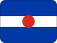

Australia
History
Federation created or reshaped Australia's federal political structure.
The Balfour Declaration recognised Australia as autonomous within the Commonwealth.
Australia adopted the Statute of Westminster, backdated to 1939.
The Australia Acts ended the remaining British legislative role in Australian law.
 Part ofOceaniaMore countries, cities and routes.
Part ofOceaniaMore countries, cities and routes.Short facts
RegionOceania / Australasia
LanguageEnglish
Time zoneMultiple (AEST UTC+10 to AWST UTC+8)
Drives onLeft
Worth seeing
- Great Barrier Reef: The world's largest coral reef system, stretching 2,300 km along the Queensland coast.
- Sydney: Iconic harbour city with the Opera House, Harbour Bridge, and Bondi Beach.
- Uluru: Sacred sandstone monolith at the heart of the Red Centre, revered by the Anangu people.
Find a city in Australia
Showing all cities
 Brisbane
Brisbane Canberra
Canberra Melbourne
Melbourne Sydney
SydneyPlanning questions
What is Australia known for?Great Barrier Reef, Sydney, Uluru.
What is the capital?Canberra.
Which language is useful?English.
When is the national day?26 January.
How should I browse it here?Start with the facts, jump to linked cities, then check events and topics.
Upcoming events
Showing all 24 events
 Bledisloe Cup10 October 2026 - 17 October 2026 — Auckland — New Zealand
Bledisloe Cup10 October 2026 - 17 October 2026 — Auckland — New Zealand Australian MotoGP23 October 2026 – 25 October 2026 — Phillip Island — Australia
Australian MotoGP23 October 2026 – 25 October 2026 — Phillip Island — Australia NRL Grand FinalOct 2026 · Australia
NRL Grand FinalOct 2026 · Australia Great Barrier Reef Coral Spawning1 November 2026 – 30 November 2026 — Great Barrier Reef — Australia
Great Barrier Reef Coral Spawning1 November 2026 – 30 November 2026 — Great Barrier Reef — Australia Melbourne Cup3 November 2026 — Melbourne — Australia
Melbourne Cup3 November 2026 — Melbourne — Australia AFL International Rules Series12 November 2026–24 November 2026 — Adelaide — Australia
AFL International Rules Series12 November 2026–24 November 2026 — Adelaide — Australia Rugby League World Cup Final15 November 2026 — Multiple cities — Australia
Rugby League World Cup Final15 November 2026 — Multiple cities — Australia AFLW Grand Final28 November 2026 – 29 November 2026 — Multiple cities — AustraliaMelbourne CupNov 2026 · Australia
AFLW Grand Final28 November 2026 – 29 November 2026 — Multiple cities — AustraliaMelbourne CupNov 2026 · Australia Sydney New Year's Eve31 December 2026 – 1 January 2027 — Australia — AustraliaSydney New Years EveDec 2026 · Australia
Sydney New Year's Eve31 December 2026 – 1 January 2027 — Australia — AustraliaSydney New Years EveDec 2026 · Australia Australian Open18 January–31 January 2027 — Melbourne — Australia
Australian Open18 January–31 January 2027 — Melbourne — Australia Big Bash League Final25 January 2027 — Australia
Big Bash League Final25 January 2027 — Australia Australia National Day26 January 2027 — Across Australia — Australia
Australia National Day26 January 2027 — Across Australia — Australia LIV Golf Adelaide12–15 Feb 2027 — Adelaide — Australia
LIV Golf Adelaide12–15 Feb 2027 — Adelaide — Australia Melbourne Food and Wine Festival1 March 2027 – 31 March 2027 — Melbourne — Australia
Melbourne Food and Wine Festival1 March 2027 – 31 March 2027 — Melbourne — Australia AFL Opening Round5 March 2027 – 8 March 2027 — Multiple cities — Australia
AFL Opening Round5 March 2027 – 8 March 2027 — Multiple cities — Australia Womadelaide5–8 March 2027 — Adelaide — Australia
Womadelaide5–8 March 2027 — Adelaide — Australia Biennale of Sydney14 March 2027–14 June 2027 — Sydney — Australia
Biennale of Sydney14 March 2027–14 June 2027 — Sydney — Australia AFL Gather Round10 April 2027–13 April 2027 — Adelaide — Australia
AFL Gather Round10 April 2027–13 April 2027 — Adelaide — Australia AFL Anzac Day25 April 2027 — Melbourne — Australia
AFL Anzac Day25 April 2027 — Melbourne — Australia Dreamtime at the G24 May 2027 — Melbourne — Australia
Dreamtime at the G24 May 2027 — Melbourne — Australia State of Origin27 May 2027–9 July 2027 — Sydney — Australia
State of Origin27 May 2027–9 July 2027 — Sydney — Australia Vivid Sydney28 May 2027 – 19 June 2027 — Sydney — Australia
Vivid Sydney28 May 2027 – 19 June 2027 — Sydney — AustraliaUse Canberra as the first planning anchor for Australia, then compare the city, food and worth-seeing notes on this page.
Food & drink
 Street food
Street food Beer
BeerKnown for
Great Barrier ReefSydneyUluruCanberraStreet foodBeer
 Music & Culture
Music & Culture